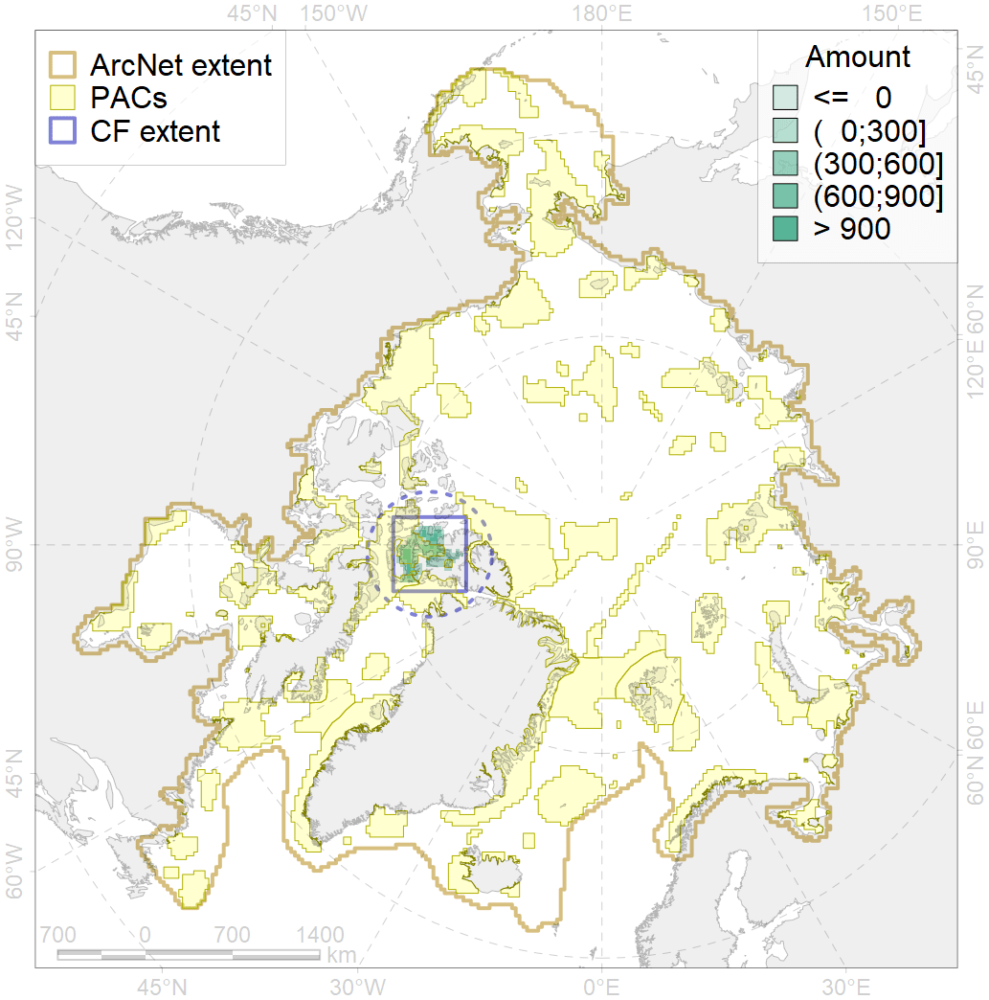
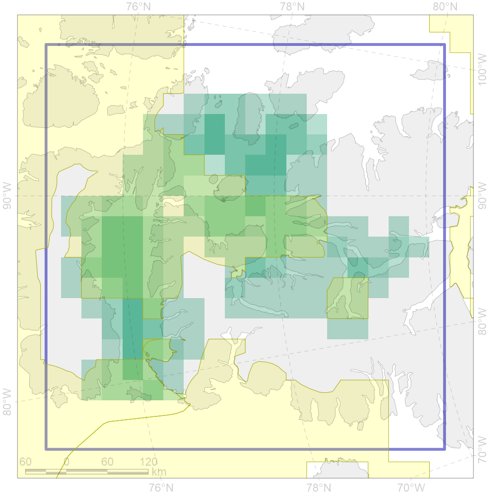

5082

| CF code | 5082 |
| CF name | Narwhal Jones Sound stock summer distribution |
| Time Period | not specified |
| Source(s) | GROM |
| Seasonality | June-September |
| Depth Horizon | 0-300 |
| Methodology | Satellite tagging, aerial surveys, traditional ecological knowledge |
| Use Restrictions | |
| Author Name | Filatova |
| Notes | |
| Scenario’s Target | 0.48 |
| Target Achievement | 0.500 (Scenario: 104.2%) |
| PAC | Share of the Total Amount within the PAC | Share of the Target Achievement for the ArcNet | PAC’s Contribution to the Target Achievement |
|---|---|---|---|
| 51 | 1.5%3.9% | 1.8%6.2% | 1.7%6.0% |
| 52 | 50.3%52.5% | 90.9%93.7% | 87.2%89.9% |
| 53 | 1.7%1.7% | 2.4%2.5% | 2.3%2.4% |
| inner | 53.5%58.2% | 95.1%102.4% | 91.3%98.3% |
| outer | 46.5%60.1% | 9.1%28.2% | 8.7%27.1% |
| † supplement values are for area consistence whereas principal values are for Accenter compatible gridded stats |